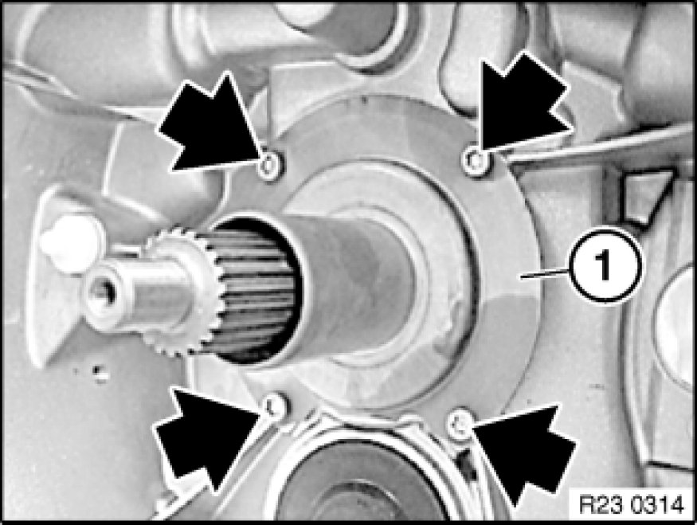
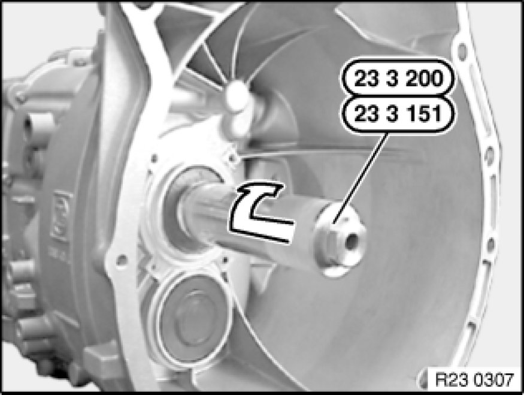
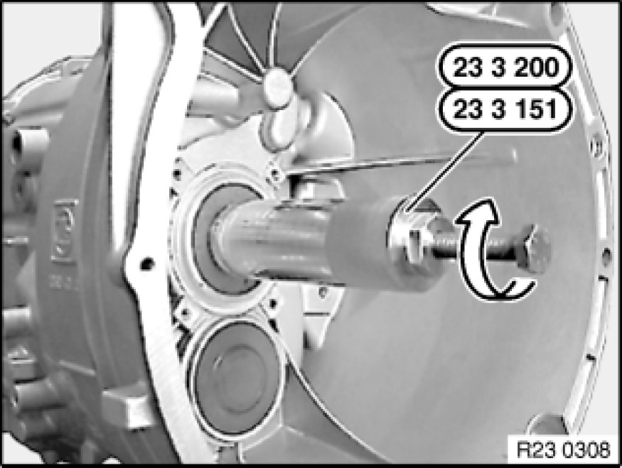
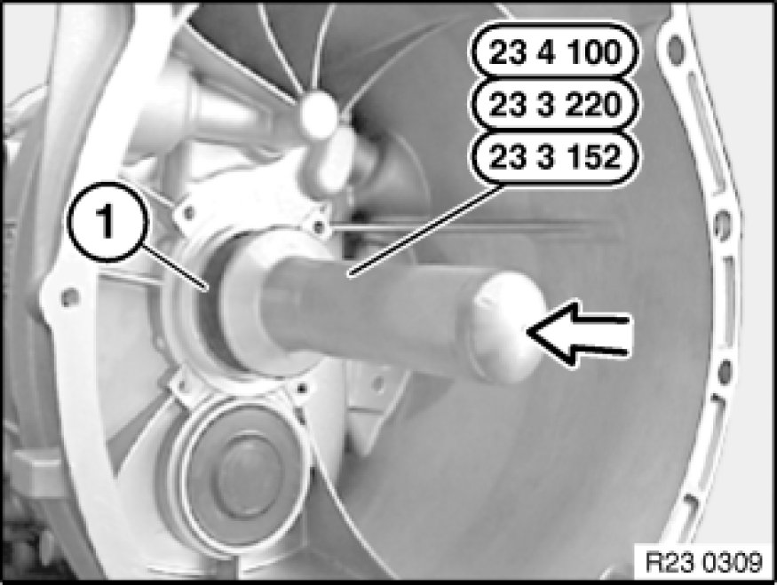

Replacing Radial Shaft Seal for Drive Shaft (GS6-37BZ/DZ)
23 12 508 - Replacing radial shaft seal for drive shaft (GS6-37BZ/DZ)

Special tools required:
- 23 3 151 23 3 150 Set of Tools
- 23 3 152 23 3 150 Set of Tools

Important!
After completion of work, check transmission fluid level Procedures.
Use only approved transmission oil.
Failure to comply with this requirement will result in serious damage to the automatic transmission!

Necessary preliminary tasks:
- Remove transmission .
- Remove clutch release unit and release lever Service and Repair from guide tube.

Release screws.
Tightening torque: 23 11 2AZ [1][2]Case, M/T.
Remove guide tube (1).
Installation Note:
Clean guide tube.
Do not grease guide tube.

Release screw on special tool 23 3 151 23 3 150 Set of Tools.
Push special tool onto drive shaft and screw into sealing ring.

Insert screw into special tool 23 3 151 23 3 150 Set of Tools again and continue turning until sealing ring is pulled out of transmission housing.

Installation Note:
Coat sealing lips of radial seal with gear oil.
Push radial seal (1) onto drive shaft up to housing.
Drive in radial seal (1) as far as it will go with special tool 23 3 152 23 3 150 Set of Tools and plastic hammer.